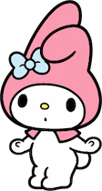
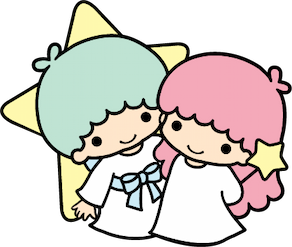
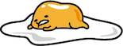
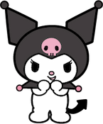
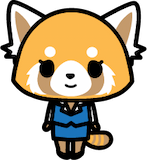
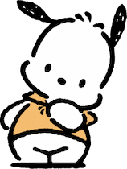

Clique em um personagem para ver seu nome e sua história.






Hello Kitty, ou Kitty White, é a personagem mais famosa da Sanrio. Ela representa amizade, gentileza e positividade, com um visual simples e inesquecível.